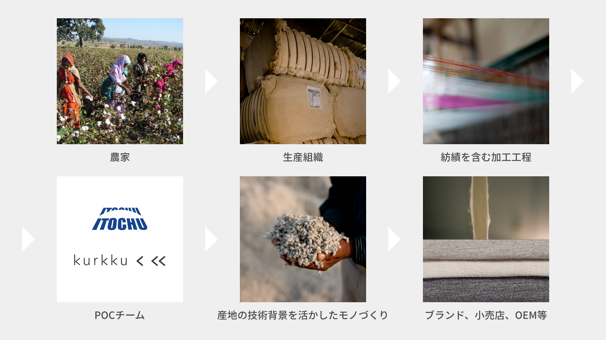

POCが起こす変化
①オーガニックコットンの供給拡大をサポート
近年、消費者によるオーガニックコットンの需要は伸びている一方、生産量は低下しており需要に追いつくことができていません。オーガニックコットンはいまだ綿花総生産量の1%にしか満たないという事実があります。そこで、生産者にオーガニック栽培を行うための必要な資源の提供と教育を実施し、より多くのコットン農家がオーガニック栽培を開始できるように実施することで供給量の拡大を目指します。さらにPOCはブランドや小売店の皆さまからのニーズの集約によりまとまった生産を確保することで、お客さまにとっての安定的な供給を行うなど、生産者との双方のマッチングを実施しています。
インドで起きた前代未聞の偽オーガニックコットン騒動2020年、オーガニックコットンをめぐり残念な出来事がありました。インド政府の農産物・加工食品輸出開発庁(APEDA)のテンプレートを使用した証明書が偽造される悪質・巧妙な手口で、なんと2万トンもの綿花が不正にオーガニック認証を取得し流通していたことが判明したのです。判明後、オーガニック綿花の国際認証機関であるGOTSにより11社に対する認証禁止が課され、1つの認証機関との契約が打ち切りとなりましたが、認証取り消しによりオーガニック綿花の流通量が減ったことで移行期間綿(IC2)の需要が高まってきています。
②透明性・トレーサビリティ―の提供
普段私たちが着ているものはどこから来ているのか、どのように作られているのか—消費者から生産者が見えにくい現状を見える化するのがPOCです。POCは、現地農業組合に所属する農家から仕入れた綿花のみを購入し、指定の工場で紡績を行うため、プレオーガニックコットンの農家から最終製品(ブランド)まで、全ての行程を遡ることが可能です。通常栽培のコットンが混ざってしまうリスクは、POCでは最小限に抑えられています。
③サプライチェーンを駆使したマーケットへの展開
POCは有機栽培を目指すコットンの生産者と世界のブランドや小売店を繋げます。また私たちは供給量を増やすために、インドの綿花商とのパートナーシップを拡大します。上記②にもあったように、インドの生産者から我々を経由して流通するものについてはトレーサビリティーを担保しております。伊藤忠商事 繊維カンパニーの世界的なネットワークとサプライチェーン・マネジメントのノウハウに加え、日本の産地の技術背景を活かしたものづくりで、プレオーガニックコットンプログラムはあらゆる地域のブランドや小売店のニーズにお応えします。
④ 環境への良いインパクト
オーガニック綿と同じ栽培方法で育つPOCは、化学肥料や農薬を使用しないことで土壌の健康を守り、使用される水の量も抑えることができます。土壌から発生するGHGも少ないので、現在存在する通常綿をオーガニック栽培に移行することで大きな環境へのインパクトが期待できます。(1)